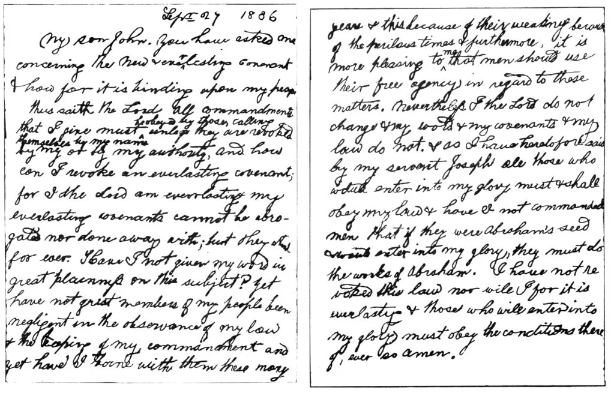

Overview of Polygamy, Part 3:Apologetics and Conclusion
We’re now well over 25,000 words on polygamy between the first two overviews, so I am quite aware I need to wrap this up and continue on to other topics in church history. Before we move on though, I want to cover some other overall problems with Joseph Smith’s polygamy along with looking at a few more apologetic responses from the church’s essay to outline why I believe that not only is polygamy not from God, but that the apologetic responses the church gives do not fit the accounts I’ve outlined.
Spiritual Wifery vs Plural Marriage
One problem I had when reading the Saints book was looking at how the church framed the idea of “spiritual wifery” practiced by John C Bennett and Joseph Smith’s brother, William Smith. The attempts to try and separate the two feels like an apolgetic attempt to preserve Joseph Smith as being the most righteous person possible, but the details just do not give such a great distinction to me. From the church’s essay on Plural Marriage in Kirtland and Nauvoo:
“Nevertheless, rumors spread. A few men unscrupulously used these rumors to seduce women to join them in an unauthorized practice sometimes referred to as “spiritual wifery.” When this was discovered, the men were cut off from the Church.”
As I mentioned in the second polygamy overview about the Happiness Letter, the idea of “spiritual wifery”
was happening at the same time that Joseph Smith was ramping up polygamy, and it was happening among those
who were the closest to Joseph Smith.
In fact, it was not just John C. Bennett, who had become extremely close to Joseph Smith during this time,
that was having sex with women under the idea of “spiritual wifery,” but Joseph Smith’s own brother William
was as well. While the church wants to make this an entirely different idea than “plural marriage,” they
really are not all that different if you view them as you would view any other group practicing this kind of
idea.
The people who were “cut off from the Church” testified that they learned these practices from Joseph Smith
and this was confirmed by the women they seduced in the practice of ‘spiritual wifery.’
First is the testimony of Catherine Fuller, who was told by Joseph's brother William that she should not get
married so they could continue having sexual relations:
"[William Smith] has also been to my house on the 27th of last month being the day I was married and proposed unlawful connexion but I refused and told him that it was contrary to the teaching of Joseph on the stand. He answered that Joseph was obliged to teach to the contrary on the stand to keep down prejudice and keep peace at home. First W. Smith insisted very much that I should not marry and proposed to supply me with food etc if I should remain unmarried and grant his requests." (Catherine Fuller's testimony)
Sarah Miller also testified that she was told that the teachings of "spiritual wifery" originated with Joseph Smith:
"Some two or three weeks since, in consequence of Bro Joseph Smiths teachings to the singers, I began to be alarmed concerning myself, & certain teachings which I had recevd from Chauncy L. Higby, & questioned him about his teaching, for I was pretty well persuaded from Joseph[’s] public teachings that Chaney had been telling falsehood.– but Chauncy said that Joseph Now taught as he did th[r]ough necessity, on acount of the prejudices of the people, & his own family particularly as they had not become full believers in the doctrine." (Sarah Miller's testimony)
A third account from Margaret J. Nyman confirms this yet again:
“During the evening's interview, he, (as I have since learned,) with wicked lies proposed that I should yield to his desires, and indulge in sexual intercourse with him, stating that such intercourse might be freely indulged in, and was no sin: That any respectable female might indulge in sexual intercourse, and there was no sin in it, providing the person so indulging, keep the same to herself; for there could be no sin, where there was no accussor;—and most clendestinely, with wicked lies, persuaded me to yield by using the name of Joseph Smith: and, as I have since learned, totally false and unauthorised; and in consequence of those arguments, I was influenced to yield to my Seducer, Chauncey L. Higbee.”(Testimony against Chauncey L. Higbee, 25 May 1844)
While apologists argue that these teachings misrepresented Joseph Smith’s private instructions for personal
gain, the account aligns closely with the historical context of polygamy, specifically with Joseph Smith's
need to keep it hidden from Emma to maintain peace at home.
No records exist indicating that Joseph Smith explicitly taught women they could have sexual relations
outside of marriage. However, the “Happiness Letter” does suggest that such behavior could be acceptable
within guidelines Joseph himself established. Furthermore, there are documented instances of Joseph Smith
engaging in sexual relations with women who were only his eternal, polyandrous wives, consistent with the
notion of a “spiritual wife.”
In addition, Margaret J. Nyman’s account states that Chauncey Higbey taught, “for there could be no sin,
where there was no accuser…,” even persuading her to submit by invoking Joseph Smith’s name. As I discussed
previously, Joseph Smith was promoting a similar concept to the church at the same time he was advancing
polygamy: that refraining from accusing others of sin meant one was not sinning. These ideas did not emerge
independently; they trace directly back to Joseph Smith’s teachings, and those engaged in “spiritual wifery”
were close to him when involved in these relationships.
I’m not trying to overstate things here, but rather to emphasize that multiple testimonies reveal Joseph
Smith
shared these teachings with his inner circle, including his brother, an apostle of the church. The church
condemns John Bennett, who after a fallout with Joseph Smith publicly shared scandalous accounts, but
Bennett had been a confidant within the church during the period he practiced what was later labeled
“spiritual wifery” to distinguish it from the polygamy and polyandry Joseph Smith promoted privately.
This pattern resonates with the proposal to Nancy Rigdon, and I believe the letter speaks for itself. Once
one understands Joseph Smith’s intentions and the carefully crafted implications within the letter—using
Solomon as an example of what those who understand Heaven’s desires might seek—the significance becomes
clear.
Carefully Worded Denials
One of the things that is so troubling about polygamy is how Joseph Smith was so dishonest not just to Emma, but to the church as a whole. Picking up from the idea of “spiritual wifery,” the church continues their essay with this statement:
“The rumors prompted members and leaders to issue carefully worded denials that denounced spiritual wifery and polygamy but were silent about what Joseph Smith and others saw as divinely mandated “celestial” plural marriage.The statements emphasized that the Church practiced no marital law other than monogamy while implicitly leaving open the possibility that individuals, under direction of God’s living prophet, might do so.”
This paragraph reads like it was written by a lawyer who wants to stretch the truth as much as he possibly
can without technically lying. The footnote from the essay explains these denials thus: “In the denials,
“polygamy” was understood to mean the marriage of one man to more than one woman but without Church
sanction.” Effectively, they are differentiating between “polygamy” and “plural marriage” as verbal
semantics that Joseph used to lie to both the public and most members of the church about his secret
marriages.
Just to make it clear, the “members and leaders” making these "carefully worded denials" mentioned in the
essay refers mostly to Joseph himself. In other words he lied publicly, both in printed articles and in
public speeches about his plural marriages by using a politician’s trick of having a different definition in
his head from the definition that he knows you have in your head. When Bill Clinton said, “I did not have
sexual relations with that woman,” he was excluding oral sex from his personal definition of sexual
relations.
In one example of Joseph’s public “carefully worded denials” he said the following:
“I had not been married scarcely five minutes, and made a proclamation of the Gospel, before it was reported that I had seven wives. I mean to live and proclaim the truth as long as I can…A man asked me whether the commandment was given that a man may have seven wives; and now the new prophet has charged me with adultery. I never had any fuss with these men until that Female Relief Society brought out the paper against adulterers and adulteresses…I am innocent of all these charges, and you can bear witness of my innocence, for you know me yourselves…What a thing it is for a man to be accused of committing adultery, and having seven wives, when I can only find one. I am the same man, and as innocent as I was fourteen years ago; and I can prove them all perjurers.” (Joseph Smith - LDS History of the Church 6:411).
When Joseph Smith made this declaration, he had already amassed over 20 wives. While the church will call
this a “carefully worded denial,” the fact is that he was lying to the church and community because he did
not want the truth to get out. Apologists want to claim that Joseph Smith was ‘acting as a man’ with the
implementation of polygamy, but the reality is that when you read the above statement after all of the
stories in these polygamy overviews, there is no way around the simple fact that he was lying.
Furthermore, Joseph Smith mockingly jokes about “whether the commandment was given that a man may have seven
wives,” and yet in D&C 132, written prior to this statement, it explicitly states that if a man “have ten
virgins given unto him by this law, he cannot commit adultery, for they belong to him, and they are given
unto him; therefore is he justified.” (D&C 132:62)
Earlier in October 1843, Joseph Smith dictated an even more pointed denial of polygamy as he was practicing
it. In his journey, Joseph Smith had his scribe, Willard Richards, write the following:
“gave instruction to try those who were preaching teaching or the doctrin of plurality of wives. on this Law. Joseph forbids it. and the practice thereof— No man shall have but one wife.”(The Joseph Smith Papers. Journal, December 1842–June 1844; Book 3, 15 July 1843–29 February 1844)
What’s even crazier is how this journal entry was retrofitted later to completely change both what Joseph Smith said and to make it work with the 'new and everlasting covenant' of plural marriage. Read how that entry was entered into the official history:
“Evening, at home, and walked up and down the streets with my scribe. Gave instructions to try those persons who were preaching, teaching, or practicing the doctrine of plurality of wives: for, according to the law, I hold the keys of this power in the last days; for there is never but one on earth at a time on whom the power and its keys are conferred; and I have constantly said no man shall have but one wife at a time, unless the Lord directs otherwise.” (History of the Church 6:2)
Just as we showed in the First Vision and priesthood restoration overviews, Joseph Smith has always been
willing to rewrite the church’s history and scriptures to conform to an evolving theology. In this case, you
can see where the church itself is willing to rewrite Joseph Smith’s history to conform to the evolving
theology of polygamy/plural marriage in the church.
In 1842, Emma, although she knew about some of Joseph’s previous indiscretions with other women and girls,
was still unaware that Joseph was actively taking wives which by then were over 20. The persistent rumors
motivated her to commit the relief society to the purpose of eradicating polygamy from Nauvoo, and Joseph
played along. Here is a statement that was published in the church newspaper and signed by Emma and the rest
of her Relief Society presidency with Joseph’s encouragement:
“We the undersigned members of the ladies’ relief society, and married females do certify and declare that we know of no system of marriage being practiced in the church of Jesus Christ of Latter Day Saints save the one contained in the Book of Doctrine and Covenants... [i.e., the now-deleted Section 101:4 that forbids polygamy]...
Emma Smith, President,
Elizabeth Ann Whitney, Counselor,
Sarah M. Cleveland, Counselor,
Eliza R. Snow, Secretary" (Times & Seasons, vol. 3, p. 940 (Oct. 1, 1842))
What Emma did not know at the time was that all three of the other members of her presidency who signed this statement were secretly committed to polygamy and two were actually married clandestinely to her own husband:
- Elizabeth Ann Whitney was an eyewitness to her daughter Sarah Ann’s plural marriage to Joseph Smith on July 27, 1842 (Compton, p. 347);
- Sarah M. Cleveland was married to Joseph Smith on June 29, 1842, officiated by Brigham Young and witnessed by Eliza Snow (id., p. 277);
- Eliza R. Snow was married to Joseph Smith also on June 29, 1842, officiated by Brigham Young and witnessed by Sarah M. Cleveland (id., p. 313).
t is very difficult to read this information and not feel incredibly sorry for Emma, who had absolutely no
idea not only what her husband was up to, but what her closest friends in the church were doing with her
husband in the name of God without her knowledge. Can you imagine having your closest friends signing a
statement trying to weed out polygamy while they are either secretly married to your husband or witnessing a
polygamous marriage to Joseph behind your back? This is why polygamy just breaks my heart, because so many
members today have no idea that this is both still doctrine of the church and that it was implemented this
way.
As I mentioned in the first part of the polygamy overview, the church added a section to the Doctrine and
Covenants in 1835 that was a clear and straightforward repudiation of polygamy in response to Joseph Smith’s
sexual relationship with Fanny Alger whether an affair or marriage.
This section was written when Joseph Smith was out of town, but Joseph Smith would have needed to approve of
its addition to the Doctrine and Covenants and, more importantly, its publication in the Times and Seasons
on October 1, 1842. From the Times and Seasons:
“Inasmuch as this church of Christ has been reproached with the crime of fornication, and polygamy: we declare that we believe, that one man should have one wife; and one woman, but one husband, except in case of death, when either is at liberty to marry again…
We have given the above rule of marriage as the only one practiced in this church, to show that Dr. J. C. Bennett’s “secret wife system” is a matter of his own manufacture; and further to disabuse the public ear, and shew [show] that the said Bennett and his misanthropic friend Origen Bachelor, are perpetrating a foul and infamous slander upon an innocent people, and need but be known to be hated and despise. In support of this position, we present the following certificates:—
We the undersigned members of the church of Jesus Christ of Latter-Day Saints and residents of the city of Nauvoo, persons of families do hereby certify and declare that we know of no other rule or system of marriage than the one published from the Book of Doctrine and Covenants, and we give this certificate to show that Dr. J. C. Bennett’s “secret wife system” is a creature of his own make as we know of no such society in this place nor never did.
[Signed by 12 men, including Newel K. Whitney, John Taylor, and Wilford Woodruff. Under an almost identical statement are the printed signatures of 18 women including Sara M. Cleveland and Eliza R. Snow]” (Times and Seasons, October 1, 1842)
To be clear, Joseph Smith would have already been married to both Sara Cleveland and Eliza Snow when this
was published, and Newel Whitney had given his daughter to Joseph Smith and performed their polygamous
sealing. While apologists will contend that the use of the term “secret wife system” gives them an out, the
fact that the church’s statement says that they “certify and declare that we know of no other rule or system
of marriage than the one published from the Book of Doctrine and Covenants” is without any doubt a complete
and intentional lie.
I hope these examples make clear that these were not “carefully worded denials” as the church states in
their essay, but outright lies to keep both his first wife Emma and the church unaware of what Joseph Smith
was teaching in secret. If the church wants to claim that the lying was justified because it was for God,
they should be upfront and state it, because what is in the essay is a deceptive statement premised on using
technicalities and weasel words to keep members from realizing just how dishonest Joseph Smith was to both
his wife and the members of the church.
The Instructions Were Not Clear
Another common apologetic is found in the church’s essay is to say that Joseph Smith was implementing polygamy the best he could without specific instructions from God on how to proceed. From the essay:
“Although the Lord commanded the adoption—and later the cessation—of plural marriage in the latter days, He did not give exact instructions on how to obey the commandment.”
First, I want to be clear that polygamy/plural marriage is not over – it is still the doctrine of the
church. To be clear, the manifestos that stopped polygamy in this life were not considered a revelation,
which makes sense given that D&C 132 is still doctrine. Polygamy is still being practiced for the
eternities, and we need look no further than the current prophet, Russell M. Nelson, or his First Counselor,
Dallin H. Oaks. Both are sealed to multiple women, and under church doctrine they will be sealed to them for
eternity, and will be able to have sex with both of them to create enough spirit children to populate their
worlds with as gods.
But more importantly to this overview, the idea that God did not give Joseph Smith enough instructions on
how to handle polygamy is just ridiculous. The problem isn’t that D&C 132 isn’t specific in its rules – it’s
that Joseph Smith violated pretty much every rule that was dictated by Joseph Smith. This should be clear
from D&C 132:8 which states: “Behold, mine house is a house of order, saith the Lord God, and not a house of
confusion.”
That verse literally sets off what is a very clear and specific set of instructions on how Joseph Smith is
to implement and practice polygamy/plural marriage. This is no different than many of Joseph Smith’s other
claimed revelations, where he is very clear on subjects whether it’s the Word of Wisdom, the buying and
selling of property, or the exact amounts that people should invest in the Nauvoo House.
Among the rules that D&C 132 is very clear on:
| Verse | Explanation |
|---|---|
| D&C 132:15 | Marriages not sealed in the “new and everlasting covenant” end at death, invalidating all marriages not sanctioned by Joseph Smith and the Church. |
| D&C 132:41 | A woman in the covenant who is with another man is guilty of adultery and will be “destroyed,” challenging the practice of polyandrous wives. |
| D&C 132:44 | If a faithful woman’s husband breaks the covenant, she may be given to another pure man, but only Joseph Smith has the authority to make this happen. |
| D&C 132:51 | Emma Smith is prohibited from accepting Joseph Smith's previous offer, which gave her the choice to either take an additional husband or pursue a divorce. Instead, D&C 132 withdraws this offer, framing it as an "Abrahamic test." |
| D&C 132:54 | Emma must “abide and cleave” to Joseph, or she will be “destroyed” if she does not accept his polygamy. |
| D&C 132:57 | Joseph Smith should not transfer any property out of his possession, as 'Satan seeketh to destroy.' |
| D&C 132:61-62 | While men are only permitted to marry virgins, Joseph Smith nonetheless married eleven women who were already married to other men. |
| D&C 132:61 | Men must obtain consent from their first wife, but D&C 132 provides a loophole in verse 65, blaming the wife if she withholds consent. |
| D&C 132:63 | The commandment instructs men to marry virgins and to 'replenish and multiply the earth,' warning that virgins with other men will be 'destroyed.' This verse underscores the recurring theme in Mormonism of women being assigned to men. |
I understand that this revelation does not provide explicit instructions on how Joseph Smith should propose
to other women to join him in marriage. However, it does include many specific guidelines, most of which
Joseph Smith himself violated. Some of these guidelines directly contradict the teachings in the Book of
Mormon and Doctrine and Covenants.
For example, Joseph Smith repeatedly married women who were already married to other men—polyandrous
wives—meaning he was not “espousing virgins” as required by D&C 132. This situation creates further issues,
as it implies these polyandrous wives would be guilty of adultery if they continued having sexual relations
with their legal husbands.
Additionally, the “Law of Sarah,” included by Joseph Smith in D&C 132, was frequently disregarded by him.
This could be why he wrote an exception a few verses later, stating that if the first wife did not approve,
Joseph Smith could proceed with those marriages anyway, making the first wife the “actual transgressor.”
Although Joseph Smith commanded Emma not to take any property, evidence from the first overview indicates
that, on the very day this revelation was given, he deeded a significant amount of property to her, likely
as an attempt to placate her due to his involvement in polygamy.
Finally, while D&C 132 states that the purpose of polygamy is to “raise up seed” or increase offspring,
apologists often claim that Joseph Smith never had children with his plural wives, despite substantial
evidence suggesting he had intimate relations with at least eleven of them. This undermines D&C 132’s stated
purpose, which is to “multiply and replenish the earth.”
The essay portrays Joseph Smith as a victim of ambiguity, suggesting he did not have clear guidance. But
with the details already present in D&C 132, Joseph Smith repeatedly ignored them. As I’ve argued with the
Book of Abraham translation and the apologetic claim of a “lost scroll,” if Joseph Smith consistently
violated nearly all the instructions given, why would more instructions suddenly lead him to follow them
correctly?
Joseph Smith: The Reluctant Polygamist
Another apologetic argument from the essay implies that Joseph Smith didn’t want to practice polygamy, but felt he had no choice. From the essay:"
“When God commands a difficult task, He sometimes sends additional messengers to encourage His people to obey. Consistent with this pattern, Joseph told associates that an angel appeared to him three times between 1834 and 1842 and commanded him to proceed with plural marriage when he hesitated to move forward. During the third and final appearance, the angel came with a drawn sword, threatening Joseph with destruction unless he went forward and obeyed the commandment fully.”
The first thing I want to point out, because I think this is an important and often overlooked detail, is that Joseph Smith himself is the one who wanted to know about polygamy. From the very first verse of D&C 132:
“Verily, thus saith the Lord unto you my servant Joseph, that inasmuch as you have inquired of my hand to know and understand wherein I, the Lord, justified my servants Abraham, Isaac, and Jacob, as also Moses, David and Solomon, my servants, as touching the principle and doctrine of their having many wives and concubines” (D&C 132:1)
Furthermore this language is echoed in Joseph Smith’s “Happiness Letter” that we discussed with his proposal to Nancy Rigdon:
"If we seek first the kingdom of God, all good things will be added. So with Solomon; first he asked wisdom, and God gave it him, and with it every desire of his heart; even things which might be considered abominable to all who understand the order of Heaven only in part, but which, in reality, were right, because God gave and sanctioned by special revelation."
In Doctrine & Covenants Section 132, which I believe was authored by Joseph Smith, we see Smith justifying
polygamy by presenting it as a response to his questions, supposedly answered by God. This apologetic
framing, however, clearly suggests that it was Joseph himself who initiated the inquiry into polygamy,
casting doubt on the idea that God simply "thrust" this practice upon him because he asked about it.
This aligns with the "Happiness Letter," where Joseph implies that if you desire something, God will provide
it. This belief contradicts the Book of Mormon, as mentioned in the polygamy overview, but it shows how
Joseph was creating a loophole to justify his desires by attributing them to divine will. I’ll expand on
this further below, but it’s an important detail to highlight.
We already discussed the "angel with a drawn sword" story, which is used in the essay to depict Joseph as a
virtuous man who only reluctantly embraced polygamy under threat of his life. However, this portrayal
overlooks the fact that Joseph had already engaged in an affair with Fanny Alger before even developing the
concept of sealing keys, making this explanation dubious when viewed through the lens of critical thinking
that would apply to any other religious leader facing similar accusations.
Additionally, this retelling paints Joseph’s actions in an overly favorable light. We know he used the
"angel with a drawn sword" story with Zina Huntington, shortly after she married Henry Jacobs, and he
reportedly used the same narrative with Almera Woodward Johnson and Mary Elizabeth Rollins Lightner, both of
whom were already married.
The idea of Joseph as both a "reluctant" polygamist and a man with nearly forty wives, with whom he had
sexual relations with at least eleven, contradicts the notion of someone making a minimal concession to
God's will. This inconsistency is a central issue with the apologetic stance: if this were anyone other than
Joseph Smith, such behavior would not receive the same level of justification.
Further, this narrative undermines Joseph Smith's free agency. If an angel threatened Joseph's life to
enforce compliance, was he truly exercising free will? While I don’t believe the story occurred as claimed,
even on its face, the story raises troubling questions.
Why wouldn’t the angel have appeared to the women involved to inform them of their selection? Instead, we
have a self-serving, unverifiable story from Joseph, echoing the familiar structure of treasure-digging
tales involving repeated visitations. This story was then used to pressure young women into abandoning their
morals to marry—and, in many cases, have intimate relations with—a man they saw as a prophet.
If the angel first appeared in the early 1830s, as the essay claims, prompting Joseph to marry Fanny Alger,
why did this angel continue to appear, pressuring Joseph even after he had fully engaged in polygamy? Even
when Joseph had twenty wives, he reportedly used this story to secure new brides, many of whom were
teenagers, offering promises of exaltation to them or their families in exchange. If the angel was indeed
sent to enforce polygamy, why was this requirement so easily set aside with Wilford Woodruff’s letter
("Doctrine and Covenants, Official Declaration 1")?
Consider the instances where angels reportedly intervened during the Restoration as narrated by Joseph
Smith:
- Moroni’s delivery of the Gold Plates
- The restoration of the Aaronic and Melchizedek priesthoods
- Elijah’s transfer of the sealing keys
- Joseph’s failure to marry enough wives
No angel intervened to correct issues like the exclusion of Black members from the priesthood, errors in
Joseph's biblical teachings, or inaccuracies in the Book of Abraham translation, even though these issues
would soon be verifiable. Yet, we are asked to believe that polygamy, including polyandry, was such a
critical aspect of God's plan that an angel would threaten Joseph’s life to ensure his compliance, even
after his marriage to Fanny Alger.
The "angel with a drawn sword" story and the claim that Joseph was a reluctant participant in polygamy are
deeply disturbing if they are supposed to reflect God’s will. We are asked to accept that God sent an angel
to command Joseph, who then used this story to pressure potential brides, when it was Joseph himself who
initiated the inquiry into polygamy. As stated in D&C 132:
"Verily, thus saith the Lord unto you my servant Joseph, that inasmuch as you have inquired of my hand to know and understand wherein I, the Lord, justified my servants Abraham, Isaac, and Jacob, as also Moses, David and Solomon, my servants, as touching the principle and doctrine of their having many wives and concubines" (D&C 132)
The authors of this official church essay, approved by the First Presidency, expect us to accept this story as morally sound and redemptive. According to the narrative, after Joseph inquired why others were permitted "many wives and concubines," God not only permitted him to do the same—against the teachings of the Bible and Book of Mormon—but also sent an angel to ensure Joseph expanded on a notion born from his own questions about polygamy. This simply doesn’t make sense. Church history is riddled with inconsistencies, which don’t fit the apologetic narrative but align well when considered through a critical lens, as outlined in these overviews.
John Taylor’s 1886 Revelation:
As we begin to wrap-up the overviews on polygamy in the church, I want to quickly address Prophet John Taylor’s revelation from God on polygamy. This was at a time when the church was under immense pressure to end polygamy from the government, and John Taylor asked God if they could end plural marriage, which at the time was synonymous with the new and everlasting covenant. Here is what God told Prophet Taylor:
1886 Revelation
Given to President John Taylor September 27, 1886
My son John, you have asked me concerning the New and Everlasting Covenant how far it is binding upon my people.
Thus saith the Lord: All commandments that I give must be obeyed by those calling themselves by my name unless they are revoked by me or by my authority, and how can I revoke an everlasting covenant, for I the Lord am everlasting and my everlasting covenants cannot be abrogated nor done away with, but they stand forever.
Have I not given my word in great plainness on this subject? Yet have not great numbers of my people been negligent in the observance of my law and the keeping of my commandments, and yet have I borne with them these many years; and this because of their weakness—because of the perilous times, and furthermore, it is more pleasing to me that men should use their free agency in regard to these matters. Nevertheless, I the Lord do not change and my word and my covenants and my law do not, and as I have heretofore said by my servant Joseph: All those who would enter into my glory must and shall obey my law. And have I not commanded men that if they were Abraham’s seed and would enter into my glory, they must do the works of Abraham. I have not revoked this law, nor will I, for it is everlasting, and those who will enter into my glory must obey the conditions thereof; even so, Amen. (1886 Revelation Given to President John Taylor September 27, 1886)
This revelation is extremely important because it is used by the polygamous offshoots of the modern day LDS church as it quite explicitly states that God is not going to end polygamy because of pressure from anyone. The last part is particularly telling:
“And have I not commanded men that if they were Abraham’s seed and would enter into my glory, they must do the works of Abraham. I have not revoked this law, nor will I, for it is everlasting, and those who will enter into my glory must obey the conditions thereof; even so, Amen.”
Apologists argue that polygamy and the new and everlasting covenant are separate topics. However, early
church leaders and God himself, as relayed by the prophet, did not make this distinction. Statements from
Prophet Taylor, such as ‘the church must do the works of Abraham’ and ‘this law… is everlasting,’ make it
clear that polygamy was understood to be part of the new and everlasting covenant.
Just four years after these pronouncements, Prophet Wilford Woodruff introduced the first manifesto to end
polygamy for time. Notably, just two years prior, in 1888, Woodruff had stated, ‘We are not going to stop
the practice of plural marriage until the Coming of the Son of Man’ (Diary of Heber J. Grant, Prophet
Woodruff at the Manti Temple Dedication, May 17, 1888).
Woodruff himself, along with other apostles, took additional polygamous wives even after the manifesto,
highlighting the church's reluctance to end the practice. The 1886 revelation to John Taylor, which ties
polygamy to the ‘new and everlasting covenant,’ is ignored by the church today because it conflicts with the
church's current stance, though it aligns with Joseph Smith's teachings and Doctrine & Covenants 132.
As discussed in other overviews, church leadership appears to operate based on personal views rather than
divine guidance, evidenced by changes like Prophet Russell M. Nelson's recent implementation of the ‘name
change’ policy he advocated for over decades.
Today, the church distances itself from Taylor's 1886 revelation. However, even FAIR Mormon acknowledges
that ‘it appears to be in his handwriting, and it is probably genuine.’ (FAIR. Plural marriage/John Taylor) This revelation is significant
because God explicitly told Taylor to continue polygamy, affirming its link to the ‘new and everlasting
covenant.’
If one believes that God changed his mind only four years after instructing Taylor to continue polygamy—and
only two years after Woodruff’s claim that plural marriage would persist until Christ's return—then one must
reconcile this with the idea of an unchanging God. Notably, this quick change parallels the church’s
reversal on the November 2015 LGBT policy.
Spiritual Witnesses of Polygamy
The church encourages members to seek spiritual confirmation on sensitive topics, including polygamy. The church’s essay on the subject follows a pattern intended to lead readers from initial discomfort, through an internal struggle, to eventual peace and acceptance through a spiritual experience. As the church states:
“Nevertheless, for many women and men, initial revulsion and anguish was followed by struggle, resolution, and ultimately, light and peace. Sacred experiences enabled the Saints to move forward in faith.”
This approach reflects the church's description of Joseph Smith's wives, who reportedly received spiritual
confirmations that led them to accept his proposals. It’s essential to respect these women's experiences
without presuming to know their motives. For example, Lucy Walker experienced two sleepless nights before
feeling her confirmation in the form of a ‘light in the room,’ which reassured her to marry Joseph Smith.
From a young age, church members are taught to interpret emotions as divine guidance, with positive feelings
seen as confirmation and discomfort as opposition. This mindset was evident when Joseph Smith pressured
young women into accepting polygamy by warning of severe spiritual consequences if they refused, followed by
instructions to pray for confirmation.
A poignant testimony from a young woman in an LDS offshoot group practicing polygamy today illustrates this
experience:
“I’ve been searching for a witness of this work and of this church and just tonight I got my witness and it’s burning within my soul how important this work is and how true it is. I know it is. And it’s hard to believe that just a year ago I was in high school and now I am in a plural marriage and struggling. But I know without a shadow of a doubt, that this is the Lord’s work. That I’ve finally found it. I say this in the name of Jesus Christ amen.” ( Testimony excerpt of a member of The True and Living Church of Jesus Christ of Saints of the Last Days, Spiritual Witnesses Video)
This young woman’s testimony, while specific to her offshoot group, is similar to what one might hear in any
LDS testimony meeting, despite the content difference.
While spiritual confirmations hold personal significance, they are demonstrably inconsistent across
religious traditions and within LDS history itself. Many people receive such confirmations that later do not
align with reality or expected outcomes.
The church often cites the spiritual confirmations of polygamous wives to justify polygamy as divine, but
this overlooks the fact that spiritual testimonies are unreliable for discerning truth. Numerous individuals
today still receive ‘spiritual’ confirmations of polygamy’s divine origin, even within offshoots of the
Brighamite branch, further complicating the issue.
Ultimately, as discussed in previous overviews, following historical evidence and scholarly research reveals
that these doctrines likely originated with Joseph Smith himself, and they are explicable without invoking
divine guidance.
Conclusion
As I said at the beginning, polygamy is what never sat well with me as a convert. My wife and I met young,
which meant that I was always jealous in school when she was around other boys, and I know she was jealous
when I was around other girls. It’s obviously a normal feeling for any couple, but the idea of thinking
about how she would feel if I was taking additional wives and having sex with them just made my stomach turn
and ultimately grew in my mind as a problem with the church that had no reasonable answer.
I often see critics of the church say that Joseph Smith implemented polygamy simply to have sex with many
women and some even label him a pedophile for his two marriages to 14 year old girls. The truth is that
nothing is usually that black and white, and I do think that Joseph Smith was thinking about sexual
relations based on how he implemented polygamy, but I also believe he was trying to accomplish other ties
and secure powerful and influence as well.
I also think that calling Joseph Smith a pedophile is flat-out incorrect - he was not attracted only to
young girls and clear had sex with many women who were post-puberty. Joseph Smith was a predator just as
every other religious leader who preys on their followers for sex, money, and power is. This is not a
distinction without a difference and I think is important to use the correct terminology, because I have
shown in these overviews how Joseph Smith preyed on his followers for sex, money, and power, and that goes
well beyond polygamy.
The truth is that whatever motivation we put on Joseph Smith, it’s going to be based heavily on our own
speculation. What we can look at objectively, however, is how Joseph Smith used his authority to coerce
young girls to marry him, and that we know he had sex with at least eleven of them which shows that sex was
at least a factor in these marriages.
Joseph Smith writes in his Happiness Letter the following:
“God has designed our happiness, the happiness of all his creatures, he never has, he never will, institute an ordinance or give a commandment to his people that is not calculated in its nature to promote that happiness which he has designed, and which will not end in the greatest amount of good and glory to those who become the recipients of his law and ordinance.”
There is no possible way that anyone can argue in good faith that D&C 132 promotes happiness among the women
of the church. Even the church’s essay concedes the anguish that Joseph put his ‘beloved Emma’ through
beginning with his sexual relationship (whether an affair as history states or a marriage as the church
proclaims) with Fanny Alger all the way through his mock marriage to the Partridge sisters after Emma
briefly allowed polygamy so that Joseph Smith would finally be sealed to her.
Further evidence of how polygamy was created by men, for men comes from Heber Kimball, who the church’s
essay said was never as happy as when his first wife Vilate approved of him taking additional polygamous
wives:
“In the spirit world there is an increase of males and females, there are millions of them, and if I am faithful all the time, and continue right along with brother Brigham, we will go to brother Joseph and say, “Here we are brother Joseph; we are here ourselves are we not, with none of the property we possessed in our probationary state, not even the rings on our fingers?” He will say to us, “Come along, my boys, we will give you a good suit of clothes. Where are your wives?” “They are back yonder; they would not follow us.” “Never mind,” says Joseph, “here are thousands, have all you want.” Perhaps some do not believe that, but I am just simple enough to believe it.” (Apostle Heber C. Kimball, address delivered in the Tabernacle, Great Salt Lake City, February 1, 1857)
Apologists would of course contend that Heber was speaking for himself, and there’s no way to know one way
or the other what Joseph Smith taught directly to others, but this thinking did not originate on its own.
The practice of polygamy was both created and implemented by Joseph Smith, and the horrifying consequences
that we still see today in LDS offshoots are evidence of the fruits of his theology.
In one other gem from Heber Kimball, he talks about how men who are taking in polygamous wives begin to look
“fresh, young, and sprightly:”
“I have noticed that a man who has but one wife, and is inclined to that doctrine, soon begins to wither and dry up, while a man who goes into plurality looks fresh, young, and sprightly. Why is this? Because God loves that man, and because he honors his word. Some of you may not believe this, but I not only believe it but I also know it. For a man of God to be confined to one woman is small business, for it is as much as we can do now to keep under the burdens we have to carry, and I do not know what we should do if we had only one wife apiece.” (Discourse by Apostle Heber C. Kimball, published in the April 22, 1857 Deseret News)
I’m not saying that every man enjoyed polygamy, but I will say that the accounts are clear that men got more out of polygamy than women did. In a lot of ways polygamy is the equivalent to today’s cliché of older men taking “trophy wives,” except that they created a loophole to keep your original wife while adding additional younger wives to have sex with. I know some readers will find that comparison offensive, but this is exactly how many of the men practiced polygamy in the church. Here’s another quote from Heber Kimball that makes this clear:
“Some time ago Heber Kimball was lecturing some missionaries who were preparing to start out on foreign missions, in the Tabernacle, and said to them: “Brethren, I want you to understand that it is not to be as it has been heretofore. The brother Missionaries have been in the habit of picking out the prettiest women for themselves before they get here, and bringing on the ugly ones for us; hereafter you have to bring them all here before taking any of them, and let us all have a fair shake.” The old reprobate then had at least a score of women whom he called wives.” (Polygamy and its Fruits, New York Times, April 17, 1860)
In the previous overviews I was able to cite and use scholarship to demonstrate that the Book of Mormon is
not an ancient text and that Joseph Smith’s influence is evident throughout. I also traced the evolving
narratives of the First Vision and priesthood restoration, revealing how Joseph shaped revelations to
bolster his authority.
Polygamy encompasses the most troubling aspects of these themes. Despite writing nearly 40,000 words, I feel
that I’ve only begun to uncover the issues associated with this practice. Each revelation brought to light
further disturbing layers, underscoring just how flawed polygamy always was.
Doctrine and Covenants 132, which endorses polygamy, is built on a historically inaccurate foundation.
Contrary to its claims, God never commanded Abraham to take multiple wives, nor did He condone David’s and
Solomon’s practices, which the Book of Mormon condemns as wicked. If D&C 132 were accurate, it would
contradict both the Bible and the Book of Mormon, posing an irreconcilable theological dilemma.
Further, D&C 132 clearly serves Joseph Smith’s interests. The so-called “stern warnings” mainly target Emma,
demanding her compliance with Joseph’s polygamous pursuits, while any cautionary directives toward Joseph
are actually threats aimed at Emma. When examining Joseph’s approach to polygamy, we see patterns common
among leaders who exploit their followers, involving coercion, manipulation, and abuse of authority.
Joseph would ask young women if they believed he was a prophet, leveraging their trust to pressure them into
marriage. When they resisted, he invoked the story of an angel with a drawn sword, leaving them feeling as
though they had no choice. Many of these young women lived in his household, where he had the opportunity to
groom them for his proposals, often after they had lost parents or were otherwise vulnerable. He further
manipulated families, promising eternal rewards in exchange for their daughters, drawing men like Heber
Kimball into his practices and establishing mutual complicity that deterred anyone from speaking out.
This exploration reveals that the church’s history is not one I can align with. Even if the church were
true, it would be a faith I would not want to embrace. It’s essential to evaluate the Book of Mormon, D&C
132, and other key texts objectively, as we would any religious document, without privileging Joseph Smith.
When viewed this way, his actions become unmistakably problematic, especially his abuse of authority in
polygamy.
The notion that God would repeatedly send an angel to command Joseph to take more wives, while not
intervening to prevent hardships like those in Missouri or Nauvoo, defies reason. Joseph’s insistence on
polygamy, despite the Bible's clear examples of its failure, speaks volumes about his motivations.
Accepting Joseph Smith as a prophet requires accepting these historical issues as divinely inspired. Yet,
the evidence strongly suggests otherwise. The doctrines and practices stemming from D&C 132, including the
notion of eternal polygamy, are still part of church teachings. Women, according to this revelation, face a
bleak choice: accept their husband’s polygamous relationships or face destruction. Any belief that "it will
all work out" contradicts the harsh terms of D&C 132.
For those coming to terms with this for the first time, I empathize. Reconciling one’s heritage with this
history is challenging, but acknowledging the truth doesn’t dishonor our ancestors, who lacked the resources
we have today. We can honor their sacrifices while recognizing that their choices were made in a vastly
different context.
Thank you for reading these reflections on polygamy and its troubling legacy. Writing them has been
unexpectedly painful, reminding me of the hardships endured by those caught in these teachings.